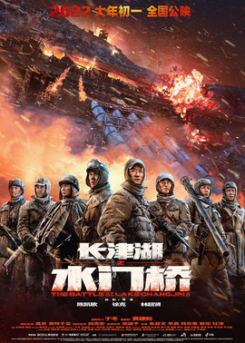

The Battle at Lake Changjin II

The Battle at Lake Changjin II (ķīniešu: 長津湖之水門橋), zināma arī kā Water Gate Bridge, ir 2022. gada Ķīnas kara filma un tas ir turpinājums filmai The Battle at Lake Changjin (2021).[3][4][5] Filmas režisori ir Čens Kaige, Cujs Harks, Dante Lams, un tajā galvenās lomas atveido Vu Džins, Džeksons Jī, Duans Jions un Žans Haniu. Šī ir daļa no Ķīnas Komunistiskās partijas 100. gadadienas svinībām uzņemtajam filmām. Filmas pamatā ir vēsturiskās cīņas Funčilinas pārejā Čosinas ūdenskrātuves kaujas laikā Korejas karā.[6] Filmas pirmizrāde notika 2022. gada 1. februārī (ķīniešu Jaunais gads) un tā visā pasaulē ir nopelnījusi vairāk nekā 626 miljonus ASV dolāru, un šobrīd tā ir 2022. gada otra ienesīgākā filma.